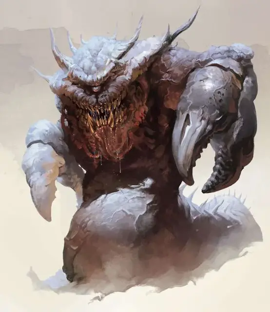

Астральный Дредноут
Astral Dreadnought
Громадный Монстр (Титан), без мировоззрения

Класс Доспеха 20 (природный доспех)
Хиты 297 (17к20 + 119)
Скорость 15 футов, летая 80 футов (парит)
| мод | спас | ||
|---|---|---|---|
| СИЛ | 28 | +9 | +9 |
| ЛОВ | 7 | −2 | +5 |
| ТЕЛ | 25 | +7 | +7 |
| мод | спас | ||
|---|---|---|---|
| ИНТ | 5 | −3 | −3 |
| МДР | 14 | +2 | +9 |
| ХАР | 18 | +4 | +4 |
Навыки Восприятие +9
Сопротивление урону дробящий, колющий, рубящий от немагических атак
Иммунитет к состояниям испуг, истощение, окаменение, отравление, очарование, ошеломление, паралич, сбивание с ног
Чувства тёмное зрение 120 футов, пассивное Восприятие 19
Опасность 21 (33000 опыта)
Бонус мастерства +7
Особенности
Антимагический конус. Открытый глаз астрального дредноута создаёт антимагическую зону, аналогичной заклинанию преграда магии [antimagic field], в пределах 150 футов конуса. В начале каждого своего хода дредноут решает каким образом расположить этот конус. Конус не действует в то время как дредноут закрывает глаза или становится ослеплённым.
Астральная сущность. Астральный дредноут не может покинуть Астральный План и не может быть изгнан или перемещен иными способами с Астрального Плана.
Демипланарное подземелье. Любое существо или объект, проглоченные астральным дредноутом, перемещаются на демиплан, в который нельзя попасть иначе, кроме как заклинанием исполнение желаний [wish] или легендарной способностью астрального дредноута: Посещение Измерения. Существо может покинуть этот демиплан только используя магию, что позволяет перемещаться по планарным измерениям, к примеру, заклинание уход в иной мир [plane shift]. Демиплан представляет из себя каменное пещероподобное помещение, радиусом 1000 футов и высотой 30 футов. Подобно желудку она содержит то, что осталось от предыдущих трапез дредноута. Дредноуту нельзя причинить вред, находясь на этом демиплане. Если дредноут погибает, демиплан исчезает, а всё его содержимое появляется вокруг трупа дредноута. Иными способами такой демиплан уничтожить нельзя.
Легендарное сопротивление (3/день). Если астральный дредноут проваливает спасбросок, вместо этого он может считать его успешным.
Разорвать серебряную нить. Если астральный дредноут совершает критическое попадание по существу, путешествующему по Астральному Плану заклинанием проекция в астрал [astral projection], астральный дредноут вместо причинения урона может выбрать перерезание серебряной нити цели.
Необычная природа. Дредноут не нуждается в воздухе, еде, воде или сне.
Действия
Мультиатака. Астральный дредноут совершает одну атаку Укусом и две атаки Клешнями.
Укус. Рукопашная атака оружием: +16 к попаданию, досягаемость 10 футов, одна цель. Попадание: 36 (5к10 + 9) урона силовым полем. Если цель является существом Огромного или менее размера и причинённый урон опускает хиты цели до 0 или цель недееспособна, астральный дредноут проглатывает её. Проглоченная цель со всем, что она носит и несёт, перемещается в незанятое место пещеры-демиплана астрального дредноута.
Клешни. Рукопашная атака оружием: +16 к попаданию, досягаемость 20 футов, одна цель. Попадание: 19 (3к6 + 9) урона силовым полем.
Легендарные действия
Астральный Дредноут может совершить 3 легендарных действия, выбирая из представленных ниже вариантов. За один раз можно использоваться только одно легендарное действие, и только в конце хода другого существа. Астральный Дредноут восстанавливает потраченные легендарные действия в начале своего хода.
Клешни. Астральный дредноут совершает одну атаку Клешнями.
Посещение Измерения (Стоит 2 действия). Одно существо размером Огромный или меньше, которое астральный дредноут может видеть в пределах 60 футов от себя должно преуспеть в спасброске Харизмы Сл 19, иначе оно магическим образом переместится в Демипланарное Подземелье астрального дредноута. В конце своего следующего хода, существо появляется на своём прежнем месте, или в ближайшем к нему пространстве, если исходное уже занято.
Психическая проекция (Стоит 3 действия). Все существа в пределах 60 футов от астрального дредноута должны совершить спасбросок Мудрости Сл 19, получая 26 (4к10 + 4) урона психической энергией при провале, или половину этого урона при успехе.
Описание
Огромные и ужасающие чудовища, известные как астральные дредноуты, обитают в серебряной пустоте Астрального Плана, заставляя планарных путешественников трястись при одной мысли о них. Они скользят через астральные туманы с самого рассвета мультивселенной, поедая всех существ, что встречают на своём пути.
Покрытый с головы до хвоста толстыми шипастыми пластинами, дредноут имеет две искривленных конечностей, которые оканчиваются усиленными магией клешнями. В его единственном глазу будто бы кружатся созвездия, а его змеиный бронированный хвост скрывается в серебряной пустоте.
Все, что он поглощает, переносится в особенный подплан - закрытое пространство, содержащее осколки самых разных времён вместе с останками планарных путешественников.
В этом месте есть гравитация и пригодный для дыхания воздух, а органика там также разлагается. Хоть побег из этого подплана и возможен при помощи магии, большая часть существ оказываются здесь уже мёртвыми. Когда дредноут умирает - подплан исчезает, и его содержимое оказывается на Астральном Плане.